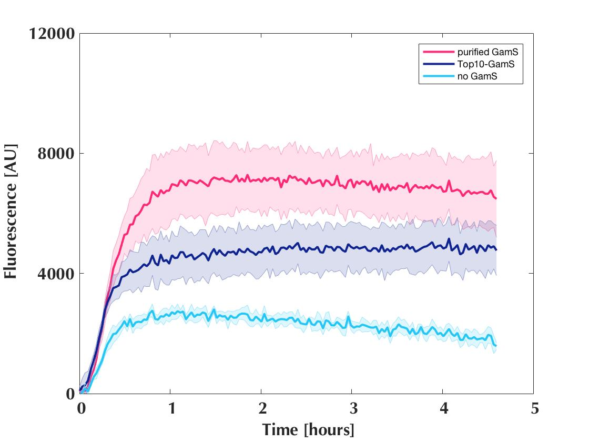

Cell free lysates were produced using sonication to destroy the cell walls [cell lysate protocol]. Bacterial cells were grown using the appropriate antibiotic and subsequently washed with a specific buffer. After a cycle of flash freezing in liquid nitrogen and thawing, the cells were lysed with sonication, eventually aliquoted and stored at -80°C.
BL21
BL21 is a E. coli strain that was engineered for transformation and high protein expression. This is achieved due to a deficiency in Ion and ompT protease. The cells naturally contain E. coli RNA polymerase but can express T7 RNA polymerase when induced with IPTG.
This lysate exists in two different forms, one where the cells were cultured on LB medium only and one where the second culturing step was performed with YTPG medium. When growing cells on YTPG medium, a different metabolism pathway is activated.
M15
M15 cells are a strain of E. coli cells that have been optimised for recombinant protein expression. They contain mutations or deletions of proteases which reduce proteolysis of recombinant proteins and thus increase protein expression. A deletion in the lacZ gene allows for α-complementation and thus blue white screening.
M15-T7
M15-T7 cells are derived from M15 cells by transformation with the plasmid pQE30 that contains the gene for T7 RNA polymerase. T7 polymerase is expressed by induction with IPTG.
This lysate is expressing more protein when GamS is added (Fig. 1). Purified protein has a greater effect but in order to reduce cost, having a lysate mixture of M15-T7 and Top10-GamS.

Figure 1: Protein expression in M15-T7 lysate.
DH5α
DH5α cells are E. coli cells that have been engineered to be used for cloning. They contain resistances to T1 and T5 phage, which would lyse the cells if present. A deletion in their genome allows for α-complementation and blue white screening.
Top10
Top10 cells are E. coli cells that have been engineered for cloning and plasmid propagation as they allow stable replication of high-copy number plasmids. They lack the lacZα gene and can thus be used for α-complementation and blue white screening.
Top10-GamS
Top10-GamS cells are derived from Top10 cells by transformation with pBADmod1-linker2-gamS plasmid, a plasmid containing the coding sequence for GamS. The cells lack the lacZα gene and can thus be used for α-complementation and blue white screening. They naturally contain the E. coli RNA polymerase. When induced with IPTG and arabinose, they express T7 RNA polymerase and the GamS protein.